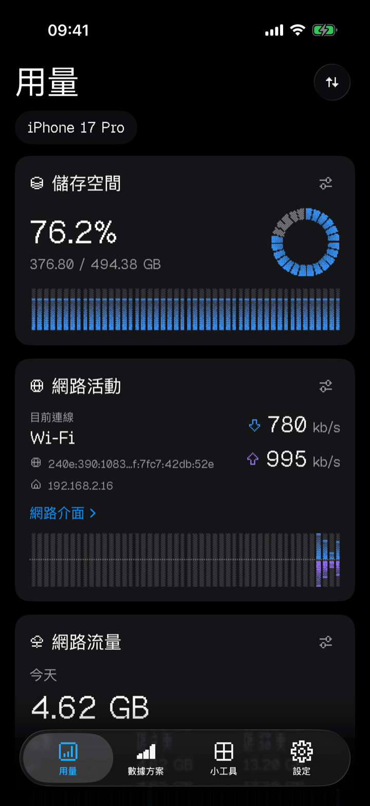
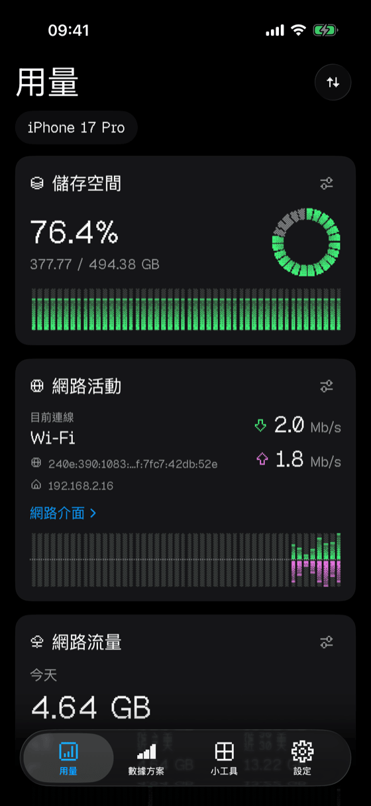

你的 iPhone，一眼看盡。
儲存空間、網路、記憶體、電池與 CPU —— 一塊即時儀表板，全部用有序抖動的像素畫出來。
前往 App Store 下載免費 · Pro 4.99 美元一次性買斷 · 非訂閱

儀表板
八張卡片。
一個畫面。
想先看哪個就把它拖到最上面。每張卡片各自設定：圖表樣式、門檻值、單位、更新頻率。
小工具
22 塊磚。
放到主畫面。
主畫面與鎖定畫面都能放。小工具跟著你的卡片設定走，卡片上換過的樣式，這裡也會跟著換。
配色
五種抖動。
五種脾氣。
可以全部統一，也可以只替某一張卡片換。Original 免費，其餘四種隨 Pro 解鎖。

隱私
資料不離開
你的 iPhone。
沒有帳號，沒有分析統計，沒有廣告識別碼，沒有第三方 SDK，也沒有我們的伺服器。資料無處可去。
Usage! Pro
4.99 美元。
只付一次。
應用程式免費，沒有試用期限，也沒有廣告。Pro 是一次性買斷，永久解鎖全部功能。
細則
- 網路流量讀的是裝置本身的介面位元組計數，包含系統流量，因此通常比「設定」裡的各 App 數字略高，也不等於電信業者的帳單。
- 電池 mAh 是估算值：機型公布的設計容量乘以目前電量。
- 不顯示電池健康度、最大容量、循環次數，也沒有攝氏溫度 —— iOS 不向任何第三方 App 開放這些資料，Usage! 只顯示系統的散熱狀態。
- 不提供各 App 的 CPU 或記憶體明細，也讀不到 AirPods 與 Apple Watch 的電量，那些走的是 Apple 私有協定。遊戲控制器可以顯示；藍牙配件需要你自己打開開關。
- 背景不執行。Usage! 只在開著的時候取樣，歷史曲線與流量統計會隨著你使用逐步補齊。
Usage! 會在背景執行嗎？
不會。它只在 App 開著時取樣，不排入任何背景工作，所以不會在你看不見的地方耗電。代價是：打開 App 才會把所有數字更新到最新。
為什麼流量數字和「設定」裡的不一樣？
Usage! 讀的是裝置網路介面的位元組計數，包含系統流量；「設定」則以 App 歸屬統計。兩者都不是電信業者的計費紀錄。
電池 mAh 準確嗎？
那是估算值，App 裡也這樣標示：設計容量乘以目前電量。它不能用來判斷電池健康度。
能顯示電池健康度、循環次數或溫度嗎？
不能，任何第三方 iPhone App 都不能。iOS 不開放這些資料。Usage! 顯示的是系統公布的散熱狀態。
能看到 AirPods 或 Apple Watch 的電量嗎？
不能，那些走 Apple 的私有配件協定。Usage! 顯示 iPhone、已連線的遊戲控制器，以及在你打開開關後，支援標準藍牙電池服務的配件。
小工具多久更新一次？
由 iOS 決定。儲存空間、記憶體與電量由小工具在每次更新時當場測量；流量統計與歷史則來自 App 開著時採到的樣本。沒有即時網速小工具，因為小工具做不到逐秒更新。
Usage! Pro 是訂閱嗎？
不是。它是一次性非消耗型 App 內購買，4.99 美元，登入同一 Apple 帳戶的裝置都可以回復購買。其他地區價格依 Apple 的換算執行。
Usage! 會收集資料嗎？
不會。沒有分析統計，沒有追蹤，沒有帳號，沒有第三方 SDK，也沒有我們的伺服器。選用的雲端同步走的是你自己的私人 iCloud 空間，而且只同步設定。